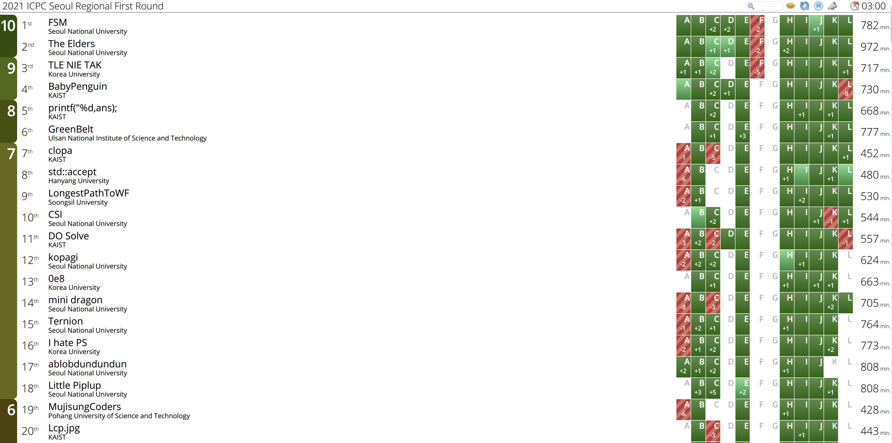
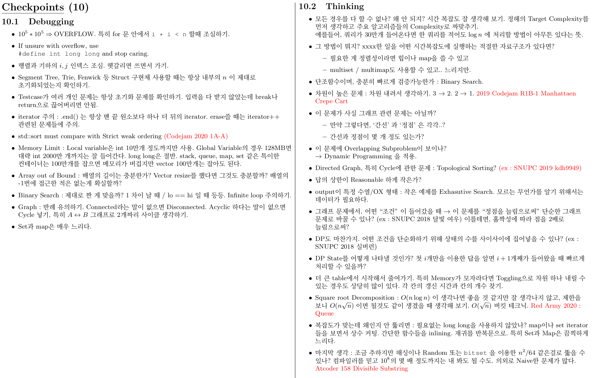
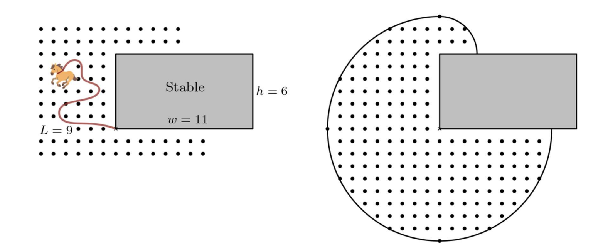

ICPC Korea First Round 2021 후기 / 풀이
Little Piplup 팀으로 복귀해서 ICPC 2021을 재밌게 치고 왔습니다.
늘 대회가 끝나고 나면 Whining을 해왔지만, 이번 대회는 솔직히 말하면 Whining할게 별로 없습니다. 18등의 성적을 거두었는데, 풀었어야 할 문제 는 다 풀지 않았나 싶습니다.

Prep - 대회과정 타임라인에 따른 의식의 흐름 - Retrospect의 순서로 작성합니다.
평소보다 앞뒤 글이 많이 길고 장황하기 때문에, 왼쪽 아래 Table of Content를 보면 문제에 대한 이야기만 볼 수 있습니다.
Preperation / Our Team
팀연습 두번을 했습니다.
- GCPC 2020 : 팀연습 기록 링크
- BAPC 2020 (기록 미작성)
이 팀의 객관적인 전력을 저는 개인적으로 적어도 2100 3명 정도 수준, 내지는 문제셋을 조금 잘 타면 1레드가 섞인 팀과도 비벼볼 수 있다고 생각합니다. 가장 최근의 팀 대회는 Hashcode 2021이었는데, 그때와 지금 팀을 비교하면 (dlwocks31의 부재를 제외하고 세명만) 크게 달라진 것은 없으므로 그때 썼던 기록에 더하여 팀원들에 대한 얘기를 조금 해보겠습니다.
-
Gratus907: 수학적인 문제에 비교적 강하고, 말리지 않을때까지는 구현이 빠르지만 말리면 한없이 말리는 경향이 있습니다.- 그래도 제 코딩 경험이 쌓이면서 예전만큼 코딩이 말리지 않습니다.
- 반면에, 한번 어떤 방면으로 빠지면 무한한 뇌절을 이어가는 경향이 있습니다. 이는 FFT에 패배한 SCPC 2021 같은 상황에서 정말 끔찍했습니다.
- 수학 복수전공을 통해 얻은 지식은 딱히 PS에 도움이 되지 않지만, 씹덕같은 정수론 문제 한두개를 가끔 쳐낼 수 있는것 같습니다.
- 아카데믹한 알고리즘 공부를 그래도 이중에 가장 많이 했었습니다.
-
DHDroid: Constructive한 문제에 매우 강하고, 관찰을 정당화 (증명) 하는 능력이 뛰어납니다.- 이 능력을 실제로 보여준 대회가 역시 SCPC 2021입니다. Round 2 하노이탑에서 일부 레드들도 달성을 어려워했던 250점을 달성하고, 저보다 훨씬 높은 성적으로 2라운드를 마친후 본선에서 5등상을 받는 쾌거를 보여줬습니다.
- 본인의 표현을 빌리자면 정말 어려운 문제에 도전해서 몇 시간 고민을 이어가는 본인의 연습방식이 도움이 된다고 합니다.
- 학과 동기이고 친구지만 이렇게 어려운 문제를 대하는 자세를 보면서 항상 많은 것을 배웁니다.
- 반대로 제한시간이 짧은 대회에 살짝 약합니다. 2시간짜리 코드포스가 가장 대표적이죠.
-
Coffeetea: 그리디하거나 휴리스틱한 관찰, 대략적인 경향성의 파악에 강합니다. 뭔가 문제에 빙의하는 특성이 있어서 글쓸때 Coffeetea의 표현을 많이 빌리게 됩니다 :)- 저는 그때 이 팀에 없었지만, 작년 ICPC F번 같은 문제에서 가장 잘 느낄 수 있습니다. (이 문제는 그렇게 어렵지 않지만요)
- Hashcode 스타일의 대회에서 초기 아이디어를 정말 잘 던져주고, 데이터를 슥 보고 특성을 빠르게 캐치합니다.
- 많이 복잡한 구현은 저보다 잘 합니다. 저보다 좀더 구현에 대해 체계적으로 고민하고, 놓치는 케이스가 비교적 적으며, 디버깅할때의 끈기와 자세가 뛰어납니다. 역시 항상 많은 것을 배우게 되는 친구입니다.
- 개발 공부에 많은 시간과 노력을 투자했기 때문에 이런 구현 실력을 갖춘 것 같은데, 반대로 소위 ‘고인물 알고리즘’ 에 대한 공부를 많이 하지는 않았습니다.
대회 시작 전날까지 팀노트를 작년 제 팀노트에 얹어서 나름대로 열심히 준비했습니다. 후술하지만, 약간의 부족함은 있었습니다.
팀노트를 준비할 때 생각해야 하는 기준은, (보편 타당한 생각을 제가 나름대로 표현해 보자면) “어 이거 그건데” 와 AC를 받는 시점 사이의 시간의 expectation을 minimize하는 것입니다. 이 말의 의미는, 구현 실수가 날만한 부분들이나 구현이 복잡한 자료구조, 알지만 구글링 없이는 코딩이 불가능한 알고리즘 등을 적어 가야 한다는 것입니다. 저희 팀을 예로 들자면
- 수많은 기하 구현을 준비했습니다. 대회 시간 중에 선분 - 선분 교차를 구현해 보셨나요? ㅋㅋ!
- segment tree에서 lazy propagation의 개념은 잘 알고 있으나 구현시 실수할 것을 대비하여 적어 갔습니다.
- Dinic과 HeavyLight Decomposition 등을 적어 갔습니다.
25페이지는 효율적으로 잘 꾹꾹 눌러 쓰면 생각보다 꽤 많습니다. 저희 팀노트는 [링크] 에서 볼 수 있는데, ICPC 전날 급하게 많은 것을 추가하느라 외관의 아름다움을 많이 잃어버렸습니다만 앞으로 계속 업데이트될 것입니다 (제 개인적으로는 archive의 의미가 있어서요.)
팀노트 맨 끝장에는 Checkpoint를 붙여 갔습니다. 이 체크포인트는 제가 계속 관리하고 있는 노트인데, 제가 나가는 팀대회에서는 팀노트 맨 끝장에 붙여 나갑니다.

(이미지를 우클릭-새 탭으로 열기해서 큰 화면으로 볼 수 있습니다)
모든 포인트들은 제가 문제를 풀면서 경험해본 것들입니다. PS 오답노트라고나 할까요.
본 대회
저희는 스터디카페에서 대회를 치렀기 때문에, 문제지가 뜨는걸 확인하는 즉시 제가 인쇄를 하러 나가면서 팀원들이 화면을 반으로 나눠서 A, B를 읽었습니다. 문제지 인쇄까지는 프린터가 느린데다 문제지 합본 pdf 파일이 바로 넘어오지 않아서, 거의 7분 가까운 시간이 소요되었습니다. 그러나 문제지를 인쇄하는 프린터 앞에 서서 저도 문제를 볼 수 있었기 때문에 실질적인 시간상의 로스는 거의 없습니다. 대회 규정상 팀원 1인 이상이 오랜 시간 자리를 비워서는 안되고 (아마도 이 규정이 strictly enforce되는 것은 어차피 기술적으로 불가능했을 것입니다만), 팀원들의 효율을 위해 문제지가 1/3정도 인쇄될 때마다 제가 계속 팀원들에게 배달했습니다.
그 사이에, I번의 첫 Solve들이 등장하기 시작했습니다. 처음에 어떻게 다른 팀들이 12문제 중 9번째에 있는 문제를 찾아내서 풀었는지 의아했지만, 생각해보니 4/4/4로 분배하면 팀원중 한명에게는 가장 먼저 읽는 문제니까 그런것 같습니다. (그럼에도 약간의 의문이 있습니다. 찾아보니 작년에도 I번이 가장 쉬운 문제였고, 그 전까지는 등록이 있는 자리였는데 혹시 그 사실을 인지하고 있는 팀들이 있을까요?)
인쇄 중에 저는 팀원들이 A, B 부터 읽고 있음을 감안하여 적당히 몇개 떼고 E를 읽었습니다. 한국어길래 슬쩍 B, C도 한번씩 읽었는데 B는 딱봐도 구현이 노답이고 C는 엄청나게 어려워 보였기 때문에… 제가 인쇄를 마치면서 2시 8분쯤 방에 복귀했는데, 이미 팀원들이 I번을 읽고 솔루션을 제시했으며 B가 구현 노답이라는 사실도 인지하고 있었습니다.
Problem I : Sport Climbing Combined
Solve : DHdroid
Code : DHDroid
무슨 문제인지 방금 처음 읽었는데, 딱히 할말이 없습니다. $p_i \times q_i \times r_i$를 기준으로 정렬해서 그 $b_i$를 출력하면 됩니다. 13분에 AC를 받았습니다.
이때 저는 E번의 풀이가 간단한 $O(B N^2)$ DP로 가능하다는 것을 이미 인지했기 때문에 ($30 * 4000^2$ 이면 4.8억이지만 실제로는 그 절반만 써서 괜찮습니다), 바로 제가 E를 잡겠다고 주장했습니다. 아무도 E를 풀지 않았다는 사실이 좀 마음에 걸리지만…
Problem E : Histogram
Solve : Gratus907
Code : Gratus907
배열을 최대 B개의 구간으로 나누어, 각 구간에서의 분산의 합을 최소화하는 문제입니다. $n$이 더 커지면 DP 최적화 기법 등을 생각해 볼 수 있겠지만, 이정도는 $B \times N$ 테이블을 칸당 $O(N)$ 에 구해도 충분합니다.
먼저, 어떤 구간 $[j, i]$ 의 분산 $V(j, i)$ 을 $O(1)$에 구할 수 있다면, 이 문제는 간단히 다음과 같이 환원됩니다. \(D(b, i) = \min_{j < i} V(j, i) + D(b-1, j-1)\) 그런데, 분산은 원소의 합과 제곱의 합을 안다면 $O(1)$에 구할 수 있고 (제평-평제 공식), 이는 prefix sum으로 최적화 가능한 문제입니다.
이 문제의 구현은 금방 했지만, 실수로 n을 써야 할 자리에 MAXN 인 4000을 써넣어서 한번 틀렸습니다. 이후 이를 바로 캐치하고, 고쳤으나 맥북에 연결한 외장 키보드의 단축키가 익숙하지 않아서(변명같겠지만 진짜입니다….) 제출과 동시에 어 저장 안된거 아닌가? 라는 비명을 지르며 1번 더 틀리고 2틀 후 23분에 AC를 받았습니다.
저희 팀이 이 문제 First Solve를 받았습니다. 개인적으로 ICPC같은 큰 대회에서 퍼솔은 처음이라 굉장히 기분이 좋았습니다. ㅋㅋ!!
이제, Coffeetea가 ‘B번은 미친듯이 케이스를 나눠야 한다. 일단 구현을 시작하겠지만 누군가 짤게있으면 바로 인터셉트해서 다른거 구현 하는게 좋겠다’ 는 말을 했고, 곧 DHDroid가 J를 바로 짤수있다고 선언해서 컴퓨터를 내줬습니다.
추가로, 저는 A번을 읽고 바로 ‘수쿼 어딘가에 있을 법한 문제다’, ‘Mo’s Algorithm으로 풀 수 있을 것 같은데, 내가 그거 구현을 못한다. 정확히 이해한게 아니라서 팀노트에도 못적어왔다’ 고 말했습니다. 이때 또 웰노운 당했다는 생각에 굉장히 화가 났습니다. ㅋㅋ…
Problem J : Ten
Solve : DHDroid
Code : DHDroid
숫자가 가득 주어지고 합이 10이 되는 직사각형의 개수를 세는 문제입니다. 일반적으로는 모든 직사각형을 볼 수 없으나, 이 문제에서는 각 숫자가 1 이상이다보니 크기가 10을 넘는 직사각형들을 볼 필요가 없어서 bruteforce할 수 있습니다. DHDroid가 2차원 부분합 잘 짜냐고 물어봐서 못한다고 대답하니까 아니;;; 이러면서 알아서 잘 짜더군요…ㅋㅋㅋ 40분 AC.
이시점 저희의 순위는 최상위권이었기 때문에 (정확히 40분 시점에 저희는 E, I, J를 풀었고, 3솔 팀 다섯 팀이 각각 E, E, B, H, K를 풀었으며 4솔 이상 팀이 없어서 저희는 5등이었습니다) 스코어보드를 보고 다음 풀 문제를 바로 알 수 없었고, B번의 케이스를 열심히 나누던 coffeetea와 제가 좀 얘기를 해보니까 H번을 금방 풀 수 있을 것 같았습니다. 제가 풀이의 확실함을 잠깐 고민하는 동안 Coffeetea가 한 7~8분? 정도 코딩을 좀 하다가, 제가 H번 풀 수 있다고 말해서 바로 바꿨습니다.
Problem H : Similarity
Solve : Gratus907, Coffeetea (B번에 대해 생각하느라 많은 참여는 못했습니다)
Code : Gratus907
두 배열 $P, Q$가 주어졌을 때, $p_i < p_j < p_k$ 이면서 $q_i < q_j < q_k$ 인 인덱스 $(i, j, k)$ 의 개수를 세는 문제입니다.
$i$번째 인덱스를 점 $(p_i, q_i)$로 표현해 보겠습니다. 그렇다면, 2차원 배열 위에서, 우리가 원하는 인덱스들은 나의 ‘왼쪽 아래’ 직사각형에 있는 점들과, ‘오른쪽 위’ 직사각형에 있는 점들입니다. 즉 2차원 평면에서 어떤 직사각형 안에 점이 몇 개 있는지를 빠르게 셀 수 있다면 - 구체적으로, 내 ‘왼쪽 아래’ 와 ‘오른쪽 위’ 직사각형 - 이 문제를 풀 수 있습니다.
언뜻 생각하면 2D segment tree 같은게 필요할 것 같지만, 잘 알려진 테크닉으로 이를 1D 세그만으로 할 수 있습니다. 세그먼트 트리는 업데이트 순서에 영향을 받기 때문에, 축 하나의 정보를 ‘업데이트 순서’ 를 이용해서 표현하는 것입니다. $x$좌표를 이용한 세그먼트 트리를 구현하되, $y$좌표가 큰 원소부터 업데이트한다고 하겠습니다. 이때, 어떤 점을 업데이트하기 직전에 $[x+1, \infty]$ 의 쿼리를 날려서 점의 개수를 세면, 아직 나보다 아래 있는 점은 업데이트를 안 했기 때문에 실제로 보이는 공간은 내 오른쪽 반평면이 아니라 내 오른쪽 위 사분면입니다. 이를 두개 이용해서 우상단과 좌하단을 각각 세면 됩니다. 같은 $y$좌표인 경우 누가 누구를 볼 수 있어야 하는지를 고려하면 되는데 여기서는 $x$좌표가 작은쪽부터 업데이트해주면 됩니다. 왼쪽에 있는 원소가 오른쪽 원소를 보게되면 ‘오른쪽 위’ 가 아니라 ‘오른쪽’ 인데도 포함하는 경우가 있어서, 왼쪽 원소는 자기랑 $y$좌표가 같고 $x$좌표가 큰 원소를 볼 수 없어야 합니다.
여름에 다른학교 컴공과에 다니는 여자친구랑 세그먼트 트리, DP, 그래프 같은 주제 몇개로 플레 문제 일주일에 5-10개씩 밀었는데 1, 그때 비슷한 문제를 풀어 봤습니다. 링크 에 있는 ‘북서풍’, ‘여우가 정보섬에 올라온 이유’ 등 문제들에서 똑같이 쓰입니다. 72분에 AC를 받았습니다.
대회시간의 대략 40%가 지난 지금, 잠시 전체 상황을 조망해보자면
- 4 Solve. 1등은 6솔브, 2/3등은 5솔브로 최상위팀인 서울대 팀은 저희 + B, C를 풀었고, KAIST 팀과 다른 서울대 팀 하나가 각각 저희보다 K를 추가 / (B, C) 를 풀고 H 미해결인 상태였습니다. 많이 틀려서 페널티를 쌓기는 했지만, 대회 시간 40% 시점까지 상위권 솔브수를 따라붙을 수 있었습니다.
- B번은 Coffeetea가 ‘충분한 시간이 주어지면 풀 수 있다’ 는 식으로 말했는데, 이게 참 어려운 말입니다. 반대로 ‘충분한 시간이 주어지지 않는’ 경우도 고려해야 합니다.
- K번은 DHDroid가 고민을 좀 해보고 있었는데, ‘그리디일텐데… 복잡도가…’ 정도 상황이었습니다.
- 다른 문제에 대해서는 솔직하게 No clue. 저는 C번을 읽어봤기에, 최상위권 팀들이 C를 풀었다는 점 + 일부 4솔팀들이 H, 심지어 E보다도 C를 먼저 풀었다는 점이 좀 신기했습니다.
- 객관적으로 이때의 4솔팀들중에는 2400급 강팀들도 있지만, 2019-2020 시즌 Cafe mountain처럼 말도안되는 팀은 없는 것으로 알기 때문에 이들의 액션은 유의미합니다.
이것들을 고려해서, 다시 Coffeetea가 키보드를 잡은채로 저희는 K를 풀고자 했습니다. 대회가 끝날 때까지 아마도 B, K는 풀 수 있을것 같았고, 하나 더 풀면 괜찮은 등수가 나오지 않겠느냐는 말을 했습니다.
Problem B : Carrot Field
Solve : Coffeetea
Code : Coffeetea
중학교 1학년 수학 교재를 보면, 말 같은걸 직사각형 한 점에 길이가 $L$인 줄로 묶어놓고 그 말이 움직일 수 있는 부분의 넓이를 구하는 문제가 많이 나옵니다. 그거랑 똑같은데, 대신에 격자점의 개수를 구하는 문제입니다.

언뜻 보면 충격적으로 쉬워 보이지만, 이 문제가 끔찍한 점은 경우를 나눠야 한다는 것입니다. 편의상 $w \geq h$ 를 가정한다고 할 때, 크게 $L < h$ 인 경우 (원의 3/4 만큼), $h < L < w$ 인 경우 (이때는 가로쪽으로는 딱 사분원만큼을 먹을 수 있지만, 그려보면 위쪽으로는 작은 부채꼴을 더 생각해야 합니다), $w < L$ 인 경우가 있으며, $w < L$ 인 경우에는 두 점에서의 부채꼴이 겹치는 부분을 따로 세서 빼야 합니다.
Coffeetea는 이 문제를 꽤 오랜 시간 붙잡았고 (구현이 체계적이려면 어쩔 수 없습니다), 구현해보았으나 틀렸습니다. 아마도 sqrt의 수치에러일 것으로 보고 다른 두 사람이 epsilon을 더하거나 이분탐색으로 직접 integer sqrt를 짤 것을 제안했고, 결국 이것 외에도 여러 자잘한 버그들을 고친 끝에 4번째만에 맞을 수 있었습니다. 119분 AC.
Problem K : Treasure Hunter
Solve : Gratus907, DHDroid (Coffeetea도 잠깐 얘기를 듣는것 같던데, 여전히 B에 빠져 있던 것으로 기억합니다)
Code : Gratus907
2차원 그리드에서 오른쪽 또는 아래로 내려가면서 보물을 먹을 수 있습니다. 그런데 왼쪽 또는 위로 돌아갈 수 없으므로 첫 경로에는 먹지 못하는 보물이 있을 수 있습니다. 모든 보물을 먹기 위해 필요한 경로의 개수 구하기.
제가 이 문제를 잡았을때는 이미 DHDroid가 ‘그리디하게’ 라는 대략적인 각은 재 놨습니다. 즉, 한쪽의 convex hull을 따라 가면서 하나 먹고, 다 지운 다음 다시 먹고.. 하는 아이디어입니다. 이 방식이 답이 된다는 것은 약간의 논증을 통해 증명할 수 있었지만, 이 ‘외곽선 따는 경로’ 의 개수를 빠르게 구하는 방법에 대해서는 좀 어려움이 있었습니다.
한참 동안을 생각하다가, 제가 ‘이 보물을 먹으면, 이 보물보다 오른쪽 위에 있는 보물은 같은 경로에서는 먹을 수 없다’ 는 사실을 관찰했습니다. 이제 이를 이용하면, ‘매번 upper convex hull을 따면서 먹는다고 할 때, 이 보물을 먹기 위해 필요한 최소 횟수’ 를 구할 수 있습니다. 구체적으로는, ‘나보다 오른쪽 위에 있는 보물들을 먹는 데 필요한 개수 + 1’ 만큼이 필요합니다.
이는 다시 뭔가 오른쪽 위에 대한 max-2D query를 하는 연산인데, 좀아까 푼 H번에서처럼 1D 세그에다가 업데이트 순서를 잘 줘서 해결할 수 있습니다! 한 대회에 같은 아이디어를 두개 낸다는 점이 좀 의심스러웠지만 이걸 코딩하기로 했습니다. 코딩 결과 WA를 받았는데, 이게 무슨 에러인지 당장 알 수 없었기 때문에, 1틀 한 후 저는 잠시 알고리즘 자체에 대해 생각해보겠다고 하고 컴퓨터를 넘겨줬습니다. 다행히 제가 K번을 코딩하고 내는 사이에 계속 생각하던 DHdroid와 B번을 풀고 온 Coffeetea가 C번에 대한 뭔가 유의미한 관찰들을 빌드업했고, 잠시 구현을 시도해서 C번에서 WA를 받았습니다. C번도 다시 생각해보기로 하고 제가 다시 컴퓨터를 잡은 후, 간단한 실수임을 발견해서 148분에 AC를 받았습니다.
Problem C : Colorful Tower of Hanoi
Solve : DHDroid, Coffeetea
Code : DHDroid
남은 32분동안, Coffeetea와 DHDroid는 C번에 대한 기존의 풀이가 해결하지 못하는 케이스들을 찾아내서 이를 잡고자 했습니다. 결과적으로 풀이의 큰 틀은 DhDroid가 제시했고, 여러 edge case들을 Coffeetea가 발견해서 계속 풀이의 사소한 오류를 수정했습니다. 저는 30분 남은 시간동안 이 풀이를 설명해달라고 할지, 다른 뭘 할지 고민해봤지만 풀이 설명을 듣는 시간이 두명에게 굉장히 아까울 것 같아서 제가 스스로 종이들을 보면서 이해해 보려고 했고, 결국 뭔가 재귀적으로 잘 한다는 아이디어임은 주워들어서 납득했지만 그 후로는 잘 모르겠습니다.
아주 간략한 아이디어는, 일반 하노이탑처럼 움직이는데 크기가 같은 판 두개가 있으면 일반 탑처럼 움직이면 그 판 두개의 위치는 서로 바뀐다는 사실을 관찰하는 것입니다. 이후 이를 바로잡아야 하는지 / 그렇지 않은지에 따라서 추가로 얼만큼 더 움직여야 하는지를 계산합니다. 시간이 될 때 DHDroid가 설명해 주기로 했습니다. [ 풀이 들어갈 자리 ]
마지막에는 $n = 1, 2$ 같은 작은 케이스들이 계속 문제가 되었지만, 영혼을 바친 5틀 끝에 173분에 AC를 받을 수 있었습니다.
Retrospect
저희는 7솔브로 18등의 성적을 거두었습니다. 10솔 2팀, 9솔 2팀, 8솔 2팀, 7솔 12팀이고 페널티싸움에서 맨 끝으로 밀렸네요.
여기부터는 대회 자체와는 큰 상관 없는 얘기고, 정확한 사실이 아닌 개인의 의견 (Factual하지 않다는 말이 아닙니다. Controversial / Personal이 가장 정확한 말일 것 같습니다) 에 해당하는 말들이 많습니다. 건전하고 건설적인 비판은 언제든 환영합니다. 대회와 상관있는 말부터 상관없는 말들 순서대로 적었습니다.
About Problemset / Our result
- 먼저, ICPC의 문제들은 OI와는 다르게 Syllabus가 없습니다. 정말 논문에 나오는 문제들부터, 복잡한 알고리즘 없이 construction으로 승부보는 문제까지 widely ranged 입니다. OI가 아이디어 싸움인 것과는 좀 다릅니다
- 그래서, 진입 장벽이 좀 있습니다. 특히 MO나 다른 수학적 사고력을 요구하는 백그라운드를 가진 사람들이 construction은 잘 할수 있지만, 매년 인예에는 FFT, LiChao Tree 등 학부 알고리즘 수업에서 다루지 않는 알고리즘 한두개를 그냥 알고 있는지 묻는 문제가 나옵니다. 올해는 A번이 저는 Mo’s algorithm에 대한 비슷한 스타일의 문제라고 판단했고, 결과적으로 Mo를 쓰는 것은 맞지만 그렇게까지 단순한 문제는 아니라고 (단순한 방법은 $n \sqrt{n} \log{n}$ 이고 통과하기 힘들다고 합니다) 하니 반만 맞은 말입니다.
- L번이 USACO 문제와 비슷한, 나름 아는 팀들은 아는 문제라고 합니다. 그래서인지 저는 프리즈후 A번을 제출한 팀들이 대부분 맞았을 것이라고 주장했는데 그러지 않았고, 대신 L번이 생각보다 많이 풀렸습니다.
- 그리고 솔직히 H와 K가 같은 아이디어인 것은 충격이었습니다만, K는 LIS를 이용한 더 쉬운 풀이가 있다고 하므로 이것도 반만 맞는 말인것 같습니다.
- 웰노운을 출제하는게 어떤 의미가 있는지는 사람마다 생각이 다를 것입니다. 저는 딱히 지지하지도, 반대하지도 않습니다. 물론 제가 모르는 웰노운이 나오면 욕하는건 당연하지만, 그건 솔직히 말하면 어쩔 수 없는 거죠.
- 저희의 이번 대회는 현재 실력에 비추어 볼 때 잘 치른게 맞습니다. 다만, Coffeetea가 실력을 발휘할만한 직관싸움 문제가 딱히 없었고, 결정적으로 저희팀의 오래된 전략이지만 개선점이 있는 ‘복잡한 구현이 있으면, Coffeetea를 밀어 넣고, 나머지 2명이 기도하면서 다른 문제를 푼다’ 는 전략을 또 써야 했습니다. B번 하나에 Coffeetea의 시간을 거의 절반이나 갈아 버린 것은 좋은 전략은 아닙니다.
- 그럼에도 불구하고, 그러지 않았으면 저는 B번 AC를 못 받았을 것입니다. DHDroid도 딱히 이런 문제를 저보다 잘 하진 않습니다. ㅋㅋ…
- 특별히 아쉬움이 남는건 없습니다. 사소한 실수로 페널티 싸움을 많이 밀렸다는건 좀 아쉽지만, 솔브수에서 상위권 팀들을 따라붙었다는 의의는 확실히 있습니다.
About my ICPC
-
저는 ICPC에 네 번 나가 봤고, 모두 본선에는 못 갔습니다. 사실 올해는 저를 제외한 두명이 휴학생이기 때문에, 저희가 몇 등을 했든 저는 본선 진출권이 없었습니다.
-
솔직히 말하자면 예선 성적으로는 본선에 진출하고도 남을 만한 성적을 2019년부터 받아 왔지만, ICPC는 많은 대학의 출전을 위해 상위권 대학에 더 엄격한 기준을 적용하여 본선 팀을 선발합니다. 구체적으로는, 먼저 $x$ 문제를 푼 팀들을 모두 선발하고, 이후에는 $x-1$ 문제를 푼 팀들 중 각 대학의 $y_i$ 위 이상인 팀… 을 선발하는 식입니다. 이 방식을 적용하는 데 있어, 어떤 학교도 총 출전팀의 50% 이상을 본선에 보내지 못한다는 (과거엔 explicit하게 적혀 있었다고 하지만, 지금은 찾을 수 없고, 그럼에도 아직 적용되는 것으로 보이는) 룰 이 있습니다. 맨 위의 선발 기준은 사실상 서울대를 위해 만들어졌으며 (서울대 15팀 중 7팀 이하를 자르는 컷을 찾습니다), 본선 진출 경계선인 60위에 (작년에는 90위였을 거고 그럼 얘기가 다릅니다) 50% 이상의 팀을 보낼 수 있는 학교는 몇 없기 때문에 (서울대, KAIST, 고려대 정도. 아마 해에 따라 다른 학교들도 가능한 해가 있을 것입니다) 사실상 저격밴이 됩니다.
-
제가 이번에 휴학생 팀으로 나간 이유도 여기에 있습니다. 저랑 비슷한 수준의 팀원 두명을 모으면 본선 진출이 어차피 어려울 것이고, 저보다 월등히 잘하는 팀원을 찾으면 어떻게 나가볼 수 있을지는 모르겠지만 첫째로는 그런 사람이 저랑 팀을 해줄지도 의문이고 두번째로는 해준다고 해도 제가 대회를 재밌게 즐기지 못할 것 같았습니다. 그래서 휴학생 팀이지만, 대회 자체를 진심으로 즐길 수 있는 - 일종의 즐겜팀이라고 할까요 - Little Piplup에 다시 함께했습니다.
-
이 monotonic하지 않은 선발 기준에 대해 어떻게 생각하는지는 사람마다 다른 영역인 것 같습니다. 저는 당연히 이 기준으로 본선 무대를 못 밟았으므로 굉장히 화가 나지만, 대학 대항전인 ICPC에서 서울대 15팀이 나타나는 것이 그럼 맞느냐? 고 말하면 뭐 그렇게 볼 수도 있습니다. 다만, 이 부분은 조금 나아질 기미가 보이는데, PS판에서 서울대가 보여줬던 갭이 점점 줄어드는게 눈에 보이기 때문입니다. 올해의 인예 순위에서 솔브수로 격차를 낸 최상위권은
서울-서울-고려-카이-카이-유니입니다. (7솔에 저희를 포함 무려 12팀이 물려 있습니다) 참고로, 작년 인예는 9솔 이상이 7팀이었는데,서울-서울-서울-서울-카이-서울-숭실이었습니다. PS판의 저변이 넓어져서 그런 것인지, 서울대의 수많은 레드들이 PS판을 떠나고 ML 같은 보다 쓸모있는 뭔가를 공부하러 갔기 때문인지, 최근 여러 학교에서 레드 이상의 CP-er를 배출한 데 어떤 요소들이 작용했는지는 잘 모르겠지만 아무튼 그렇습니다. 레드 한명이 졸업할때까지 뛸수있는 ICPC판을 보니 내년에도 이럴 것 같고, 작년처럼 서울대 리저널 6팀인가? 보내 줬더니 모든 상을 서울대가 쓸어버리는 참사가 벌어지지는 않을 것입니다.
저는 내년이 마지막 ICPC고, 알고리즘을 공부하면서 / PS를 즐기면서 ICPC 본선 리저널 무대를 한번도 가보지 못했다는 것이 개인적으로 굉장히 아쉽습니다. 어떻게 보면 아카데믹하게 알고리즘을 공부하겠다는 목표를 갖게 된 지금은 PS 자체에 큰 의미는 없겠지만, 개인적으로 느낀 바가 그렇습니다. 그래서, 겨울방학에 좀 빡세게 돌면서 레드 정도 수준까지 폼을 맞춰놓고, 내년에는 레드 3명 또는 그에 근접한, 진출을 노리는 팀을 만들어 마지막 ICPC에 도전할 계획입니다. 좋은 팀원을 모은다면 80% 이상 가능하다고 확신하고 있습니다. 혹시 이 블로그를 보신 서울대 재학생 중, 내년 10월까지 CF 2300 또는 Equivalent한 실력을 갖출 수 있으며, 휴학 계획이 없고, 같이 공부하고 싶은 분은 연락주시면 좋을것 같네요. ㅋㅋ!!! (당연한 말이지만 이런 허공에 돌던지는 식으로 모을 생각으로 쓴 말은 아닙니다…)
대회를 마치며
항상 PS 대회를 뛰고 나면, PS를 즐기는 마인드와 대회 성적에 따른 competitive 한 마인드가 서로 충돌하게 됩니다. 이번 대회는 정말 간만에 그런 것 없이 순수하게 즐길 수 있었는데, 대회가 끝나고 나니 competitive mind가 잠깐 지배하고 있어서 위 500단어 정도를 ranting했습니다. 학기중에는 어차피 매우 바쁘기 때문에, 겨울방학에나 다시 손댈 수 있지 않을까 싶습니다.
끝나고 팀원들과 치킨을 먹으면서 대회에 대한 얘기도 하고, 재밌게 놀고 왔습니다.
-
네. 이 문장은
기만질자랑하려고 적었습니다. ㅋㅋ!!! ↩